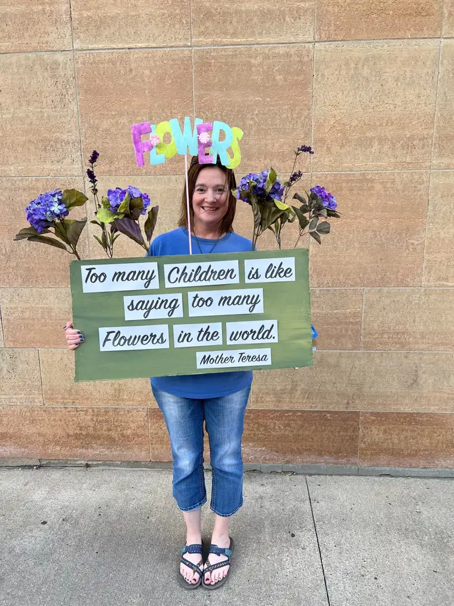

Like many, we sidewalk advocates thought that July 27 would be the last day abortions would be legal in North Dakota. We arrived at the Kopelman building that day with that expectation entrenched in our hearts. But toward the end of the afternoon, that optimistic outcome was shattered by the stroke of a judge’s pen.
We don’t even need to fully understand why or how this happened. Clearly, it’s not about one misguided judge’s actions, but so much more: a spiritual battle raging forward that we cannot see but can surely feel. It will jolt the most spiritually sensitive among us.
So, the dark forces stole our hopeful thunder that day. Rather than our tears turning to joy, they stained our cheeks once more, while the escorts held their victory dance sporting Hawaiian shirts and gleeful smiles. As in so many previous moments, it seemed as though good had been defeated.
“How long Lord?” we are tempted to lament, as in Psalm 13:1. “Will you forget (us) forever?”
I was standing midway between our state’s only abortion facility and the jewelry store on the opposite corner of the long block shortly before news of the hours-old ruling to thwart the ban on abortion in North Dakota, based on a “trigger” law put in place years before the recent Roe vs. Wade reversal, became known to us.
A friend had made some signs to celebrate our many years praying there and remind passersby of the beauty of life. For one of them, she’d taken a favorite Mother Teresa quote, shortened it a bit, and turned it into a creative poster using artificial flowers: “How can there be too many children? That is like saying there are too many flowers.”
She was about to leave, and had begun putting her signs away in her vehicle. “Wait, can I take a picture?” I asked. The flower sign provided the spark of hope I yearned for on a day when death lingered so near. “Sure,” she said. “In fact, how about I take a picture of you and the sign?”

We chatted a bit, reflecting on the day’s significance, pondering whether we had made a difference over the years of praying here for the women who came seeking a permanent solution to a temporary situation, and would leave emptier of soul.
My friend told me a story about a woman who’d decided to hike the Appalachian Trail, and determined that along with hiking, she would commit to picking up trash along the way. At the end of each day, she would weigh the trash on a scale.
At some point, the pounds of trash began adding up and the task began to feel daunting. The woman, focusing on the negative things, such as the inconsiderate actions of so many who tossed trash along the trail without disposing of it properly, was tempted to give up.
But then a revelation came to her as she realized how her negative thoughts were draining her energy, “zapping her of her ability to do good.” Focusing on how much more trash she would have to pick up, she saw that she’d lost sight of her vision to beautify the trail.
“So, she decided to just do what she could, and in that, she realized that she had made the trail better after all,” my friend relayed. She had left the trail cleaner, and more beautiful, for those who would come after her.
My friend likened this story to the pro-life movement, where we can easily become discouraged; feeling we have not, and cannot, make a difference. But we must remember that our presence and prayers have mattered, she said, because we have “made the trail better,” and cleaner, than when we arrived.
“We’ve planted some seeds here, too, and we’re pulling some weeds, also, as we go,” she added. “We can’t get overwhelmed by those weeds. We just have to keep doing what we’re doing, confident it’s making a difference.”
Maybe not everyone sees that difference, but God does. He also sees our hearts, and knows how things would have looked if we hadn’t shown up.
The moral of the story? Don’t stop cleaning the trail. Don’t stop pulling the weeds. It all matters in God’s beautiful economy of life.
[Note: I write about my experiences praying for the end to abortion at the sidewalk abutting the Red River Valley’s lone abortion facility for New Earth magazine — the official news publication of the Fargo Diocese. I hope you find “Sidewalk Stories” helpful in understanding the truth about abortion and how it plays out tragically in our corner of the world. The preceding ran in New Earth’s September 2022 issue.]